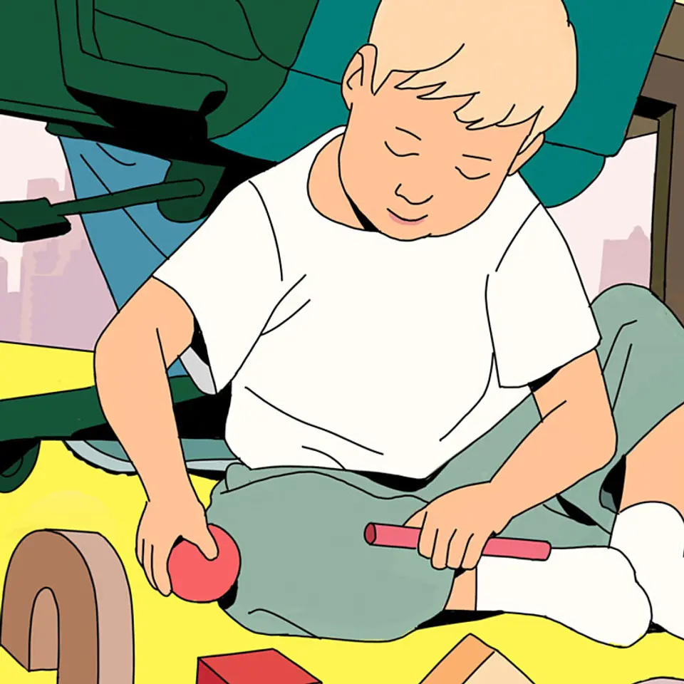

01
【失望決算】ドンキ、それでも1兆円投資の大勝負
発行日時：2026年8月20日 05:30 JST ・ NewsPicks編集部
あなたに関係ありそうな理由
大型投資や買収の価値は、発表時の金額ではなく、現場で再現できる運営の型に変えられるかで決まるためです。
概要
パン・パシフィック・インターナショナルホールディングス、PPIHが掲げる大規模投資を読むNewsPicks編集部の記事です。2027年6月期の営業利益予想は1790億円で前期比2％増にとどまり、発表後の株価は11％下落しました。それでも会社は今期を「投資の年」と位置づけ、およそ10年で1兆1000億円を投じる計画を示しています。狙いの一つが、食品スーパーを買収し、ドン・キホーテの知見を持ち込んで改装する「ロビンフッド」への転換です。7月に取得したオリンピックグループは98店舗を持ち、PPIHは2029年6月期までに約60店舗をロビンフッドへ変える方針です。今期中にも5店舗を開きます。食品スーパー市場は約26兆円と大きく、国内に676店舗を持つPPIHは2035年に1000店舗超を目標にします。ただし、買収した店を看板だけ替えても、粗利、品ぞろえ、動線、仕入れ、人材運用まで変えなければ成果は出ません。記事は、ナショナルブランドの粗利率が20％台なのに対し、PBは40％台とされる点にも触れ、6月に始めたEDRPという新PBを含め、収益構造をどう作り替えるかを焦点に置きます。PPIHには長崎屋を2007年、ユニーを2019年に取り込んだ経験があります。一方、オリンピックの転換には今期約50億円の営業赤字を見込むため、投資の負担を先に引き受ける判断でもあります。表示コメントでは、個店主義と人材育成を強みと見る意見のほか、3年間で60店を改装するなら月に1〜2店の速度で工事、人員、品ぞろえの変更を回す必要があるという論点が出ました。食品スーパーは日常の買い物を担うため、改装を急ぐほど、常連客を離さない価格と品ぞろえを保つ難しさも増します。PBの比率を上げる狙いは粗利改善にありますが、それが顧客に選ばれる商品にならなければ計画は回りません。見るべきは1兆円という派手な数字ではなく、買収後の店舗を同じ水準で変え続ける能力です。改装後の既存店売上、粗利、人員定着、出店の遅れを追えば、この投資が拡大型ではなく収益を伴う成長になっているかを判断できます。まずは改装店ごとの数値が、投資判断の最初の答えになります。
仕事や会話で使える一言
投資額ではなく、買収後の「店舗を変える型」を回し切れるかが勝負だね。
NewsPicks原文を読む
02
ビザ厳格化で「カレー屋消滅」騒動、実態はちょっと違った
発行日時：2026年8月20日 05:30 JST ・ NewsPicks編集部
あなたに関係ありそうな理由
制度変更を受ける事業では、条文の数字だけでなく、既存事業者への経過措置と審査の運用が継続性を左右するためです。
概要
経営・管理ビザの見直しを巡り、「外国人が営むカレー店が一斉に消える」といった受け止めが広がった背景を検証するNewsPicks編集部の記事です。見直しでは、必要な資本金が500万円から3000万円へ引き上げられ、日本語能力の要件も加わりました。数字だけを見ると、小規模な飲食店が直ちに事業を続けられなくなるように見えます。しかし記事によれば、既に日本で事業を営む人には2028年10月までの3年間の経過措置があり、資本金が新基準に達していないことだけで更新が一律に拒まれる仕組みではありません。事業の継続性、納税、社会保険、財務書類、会社の実態などを個別に見て判断され、基準額未満でも許可が出た事例があるといいます。実際に閉店や更新の難しさが語られるケースには、新基準そのものではなく、従来から求められていた書類や社会保険、納税の確認が厳しくなった影響も混ざっています。記事は、制度改正の目的を、実体のない会社や名目だけの経営を使った在留を防ぐことだと整理します。その目的自体と、実際に働きながら店を続ける人を必要以上に不安にさせない運用は、分けて考える必要があります。特に小規模店では、制度の説明が十分に届かないまま、資本金3000万円という見出しだけが先行すれば、雇用や取引先にも影響します。経営者側から見れば、資金を追加するか、どの書類を整えればよいか、いつまでに判断できるかが事業計画に直結します。表示コメントでは、何が審査の対象で、どのような記録を残せばよいのかを透明にするべきだという論点が目立ちました。また、抜け道を防ぐことと、真に事業を営む人を受け入れることは両立させる必要があるという意見もありました。今後は2028年10月に向け、審査基準の説明、相談の導線、既存店の更新実績がどう示されるかが重要です。政策の妥当性は厳しさの度合いだけでなく、対象者が準備でき、行政の判断を予測できる運用になっているかで測るべきだと記事は示します。説明不足が誤解を広げないかも、更新件数と併せて確かめたい点です。基準を厳しくするなら、必要な情報へ早く到達できることも制度の実効性の一部です。相談の遅れが雇用へ波及しないかにも注意が必要です。
仕事や会話で使える一言
数字の基準だけでなく、運用ルールを見える化できるかが現場の安心を左右する。
NewsPicks原文を読む
03
【衝撃】天才起業家は、子どもに「スマホもAIも」触らせない
発行日時：2026年8月20日 05:30 JST ・ The New York Times

あなたに関係ありそうな理由
AIを便利な学習支援として使うほど、子どもが自分で考え、人と関わる時間をどう残すかという設計が必要になるためです。
概要
テクノロジーを作る側の経営者や研究者が、自分の子どもにはスマートフォンや生成AIへの接触を強く制限する例を追ったニューヨーク・タイムズの記事です。背景には、若者の依存を巡るMetaへの訴訟、そして画面利用が乳幼児に与える影響をめぐる研究と懸念があります。記事は、ピーター・ティール氏が子どものスクリーン時間を週1時間半に限っていること、ビル・ゲイツ氏が子どもに携帯電話を持たせたのは14歳からだったことなどを紹介します。GoogleやAppleの元幹部にも、自らが広げた端末の使い方に慎重な人がいるといいます。記事の問題提起は、画面を一律に悪と決めつけることではありません。乳幼児には画面から得られる利益が限られる一方、身体、認知、社会性、感情への悪影響が懸念されるという研究者の見方を置き、親子の対話や遊びを何で置き換えてしまうのかを問います。AIでは、親との会話の代わりに物語を作るサービスの例も登場します。利用者の罪悪感を減らす利便性として売られていても、子どもの発話を受け止め、考えを広げる役割を機械に任せてよいかは別の問題です。サム・アルトマン氏が息子にはAIへの接触が遅い方がよいと考えるという紹介もあり、技術の推進者の間でも線引きは定まっていません。高額な「スマホなし」の学校の存在は、制限が家庭の収入で買える選択肢になり得るという格差の論点も浮かび上がらせます。家庭ごとに端末を使わない時間を作れる条件は違うため、個人の努力だけへ帰すこともできません。表示コメントでは、禁止か放任かの二択ではなく、何を使わせないのかではなく、その時間に何を体験させるのかを考えるべきだという意見が出ました。今後は、年齢ごとの使い方、学校と家庭のルール、生成AIが親子の対話を補助するのか代替するのかを分けて見る必要があります。便利な道具を渡す判断と、考える力を育てる環境づくりを同じ問いとして扱わないことが重要です。学びの場で、人と話し、失敗も含めて試す機会を残せるかが問われます。道具が奪う時間と、残したい経験を具体的に考える必要があります。家庭と学校が、その選択を支える仕組みづくりも欠かせません。
仕事や会話で使える一言
AIを使う前に、自分で考える時間をどう残すかが設計の本丸かも。
NewsPicks原文を読む
04
トランプ大統領、対イラン「経済戦争」開始を表明－前例なき規模に
発行日時：2026年8月20日 08:20 JST ・ Bloomberg
あなたに関係ありそうな理由
制裁の対象が資源、物流、金融へ広がると、遠い外交問題でもエネルギー価格や調達、事業コストに波及するためです。
概要
トランプ米大統領がイランに対する「経済戦争」の開始を表明したと伝えるブルームバーグの記事です。発言では、これまでにない規模の経済圧力をかける姿勢が示されましたが、記事の時点では具体的な措置の全容は明らかにされていません。焦点になるのは、イランの資金や物資の流れを支える国・企業・金融機関へ、どこまで圧力を広げるかです。記事は、通貨スワップ、船籍登録、ペーパーカンパニー、原油の密輸など、既存制裁を回避するために使われ得る経路を挙げます。イラン本国だけを対象にする一次制裁より、取引を仲介した第三国の企業や金融機関にも不利益を与える二次制裁を強めるなら、中国やインドを含む取引先の判断も変わり得ます。一方で、執行範囲が不明確なままなら、企業は規制違反のリスクを避けて取引を過度に縮小させる可能性があります。米国は既にイランへの制裁や海上での取り締まりを続けており、記事は軍事行動への依存を下げ、経済面で締め付ける方向への転換として今回を位置づけます。原油市場も敏感に反応し、WTIは1バレル84ドル超、ブレントは92ドル近辺まで上昇したといいます。燃料価格の上昇は、運輸や製造のコストだけでなく、インフレと金利の見通しにも関わるため、日本企業にも無関係ではありません。供給そのものが止まらなくても、保険、決済、船の手配が滞れば、調達コストは先に上がり得ます。記事は、アラブ首長国連邦がイランとの経済関係を断つと表明したことにも触れ、地域の取引ネットワークが再編される可能性を示します。表示コメントでは、経済圧力が本当に機能するかは、中国などとの取引をどこまで抑えられるかにかかるという見方や、原油価格と世界経済への波及を注視すべきだという指摘がありました。今後は、対象となる取引や組織の具体化、二次制裁の執行、海運・保険・エネルギー市場の反応を分けて確認したいニュースです。強い言葉そのものより、制裁の穴を塞ぐ制度が実際に動くかが重要になります。発表と現場の間にどんな差が出るかにも注意が必要です。制裁の対象と例外が早く示されるほど、企業は必要な取引を判断しやすくなります。この速度も重要な論点になります。
仕事や会話で使える一言
制裁そのものより、抜け道を塞ぐ二次制裁をどこまで実行できるかを見るニュースだね。
NewsPicks原文を読む
05
難関日本市場攻めるBYD、軽EV「ラッコ」に重責ー世界攻略への試金石
発行日時：2026年8月20日 06:00 JST ・ Bloomberg
あなたに関係ありそうな理由
性能や価格だけでは、地域に根ざした販売網、整備、顧客の安心を持つ既存市場へ入り込めないことが分かるためです。
概要
中国BYDが日本向けに投入する軽EV「ラッコ」を、世界戦略の試金石として追うブルームバーグの記事です。日本の軽自動車市場は年間約160万台で、乗用車市場のおよそ3分の1を占めます。ホンダ、スズキ、ダイハツの3社が約8割を握るこの市場は、車体サイズ、税制、地方での使われ方、販売店との関係が独特で、海外メーカーにとっては入りにくい領域です。BYDはラッコで日本の消費者に合わせた商品を用意し、受注は1000台を超えたと記事は伝えます。同社は日本での販売を大きく伸ばす狙いを持ち、2025年までの累計で約7400台を販売してきました。ただし、軽EVを売ることは、単に航続距離や車両価格を比較して勝つことではありません。寒冷地や地方での走行、充電の不安、故障時の対応、下取り価格、家族が使い続けるための整備網まで含めて信頼を得る必要があります。BYDは販売拠点を77カ所へ増やし、そのうち56カ所はディーラーだといいます。記事は、この網をどこまで厚くできるかが、ラッコの受注以上に重要だと示します。既存メーカーは長い間、地域の販売会社や整備工場と関係を築き、軽自動車を生活の足として提供してきました。そこへ新規参入者が入るには、購入直後の話題ではなく、数年後の点検、修理、買い替えまで見通せる体験を作らなければなりません。軽自動車は地域の移動を支える日用品でもあり、販売の勢いが一時的な話題に終わらないかは納車後に分かります。表示コメントでも、商品力だけでなく、アフターサービスと販売網が決定的になるという指摘や、地域の暮らしに合う4WD、支援、ブランドへの信頼が問われるという論点が出ました。日本での成果は、BYDが成熟市場で「安価なEVメーカー」以上の存在になれるかを測る指標になります。今後は受注数だけでなく、納車後の評価、販売店の拡大、充電と整備の対応、軽以外の車種との相乗効果を確認したいところです。国ごとに商品を最適化し、最後の顧客接点まで運営できるかが、世界展開の持続性を左右します。販売網の数字と、各地域で実際に対応できる整備の質は同じではありません。拠点の数だけでなく、対応の確実さも比べたい点です。
仕事や会話で使える一言
新市場では、製品の魅力より先に「困った時に誰が助けるか」がブランドになる。
NewsPicks原文を読む